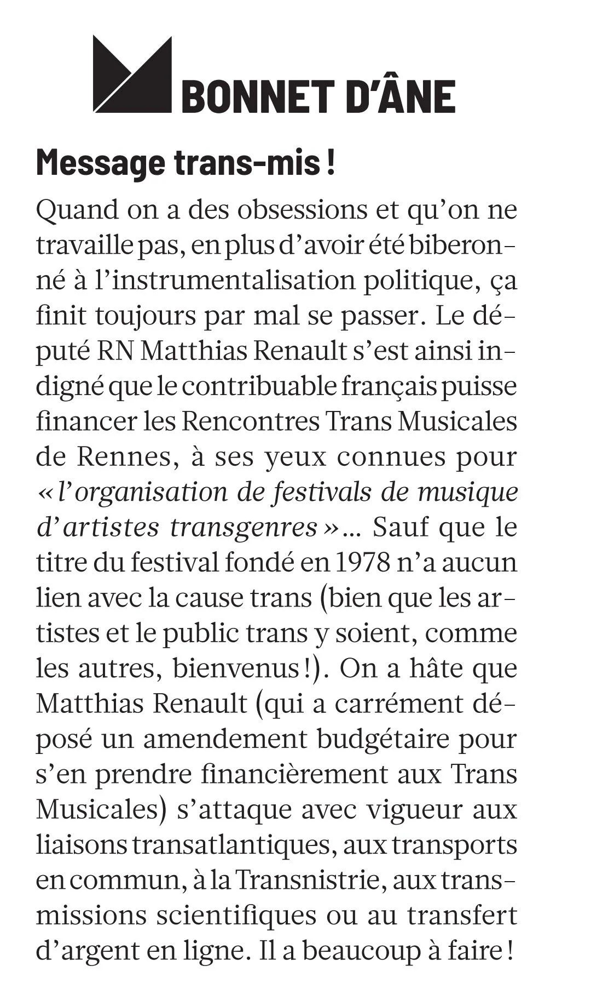

Satire relayée
« Bonnet d’âne » revient sur l’attaque de Matthias Renault contre les Trans Musicales
Date indiquée par Facebook · 20 janvier 2026
Repères éditoriaux
La chronique « Message trans-mis ! » tourne en dérision l’attaque du député RN Matthias Renault contre le financement des Trans Musicales de Rennes. Elle rappelle ce qu’est le festival et relève le contresens sur son nom.
Texte conservé avec la publication
Bonnet d'âne pour le député RN Matthias Renault.
Heureusement pour lui que le ridicule ne tue pas.

Sources
Archive rouge · export Facebook · AR-0002-FB-00899
À lire aussi · Pass culture, non à la punition collective ! · Le lien d’origine